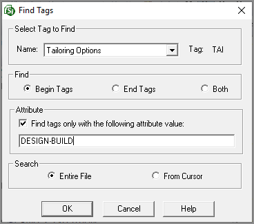

How Do I modify the tailoring options in a master specification?
SpecsIntact offers an easy method for modifying an existing Tailoring (TAI) tag within a Master specification by replacing the Tailoring names without deleting or reinserting the Tailoring (TAI) tags, which can be a very difficult process.
Step 1: Locate Specific Tailoring Options
This step streamlines navigation, allowing you to quickly locate specific Tailoring Options within a Section.
- In the SpecsIntact Explorer, select a Master
- In the Contents panel, select a Section, then perform one of the following:
- Right-click and select Edit
- Double-click on the Section to open it
- Select the Sections menu and select Edit
- Use the keyboard shortcut Ctrl+E
- In the SI Editor, perform one of the following:
- Click the Find Tags button on the Toolbar
- Select the Edit menu and select Find Tags
- Use the keyboard shortcut F4
- In the Find Tags window, below Select Tag to Find, perform one of the following:
- In the Name field, type 'T' until Tailoring Options appears
- Select the drop-down arrow and select Tailoring Options
- Below Find, select Begin tags
- Below Attribute, check Find tags only with the following attribute value
- In the Attribute field, type the attribute name exactly how it appears in the Tailoring tag (e.g., DESIGN-BUILD)
- Below Search, select Entire file
- Click OK

Step 2: Add Or modify tailoring options
This series of steps will allow you to insert, add, or correct a Tailoring Option name to the existing Tailoring (TAI) tag.
- In the SI Editor, place your cursor after the beginning Tailoring (TAI) tag (e.g., <TAI OPT=XXXX>)
- Right-click, select Attributes, and select Tailoring, then select Add Option
- On the Add Tailoring Options window, enter the new or correct Tailoring Option name
- Click OK
Step 3: delete incorrect tailoring option names
This series of steps will allow you to delete one or more Tailoring Option names within a Tailoring tag.
- In the SI Editor, place your cursor after the beginning Tailoring (TAI) tag (e.g., <TAI OPT=XXXX>)
- Right-click, select Attributes, and select Tailoring, then select Delete Option
- On the Remove Tailoring Options window, select the name to delete
- Click OK
Users are encouraged to visit the SpecsIntact Website's Support & Help Center for access to all of our User Tools, including Web-Based Help (containing Troubleshooting, Frequently Asked Questions (FAQs), Technical Notes, and Known Problems), eLearning Modules (video tutorials), and printable Guides.